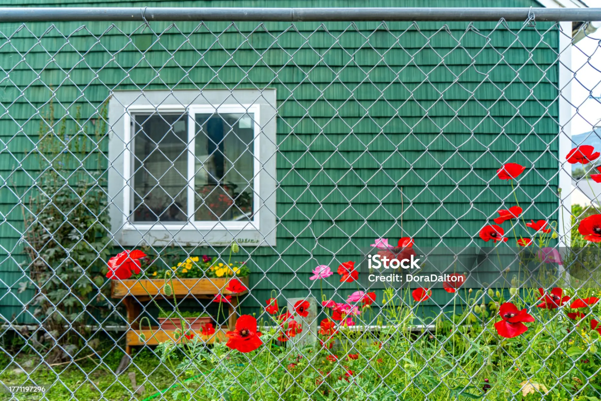
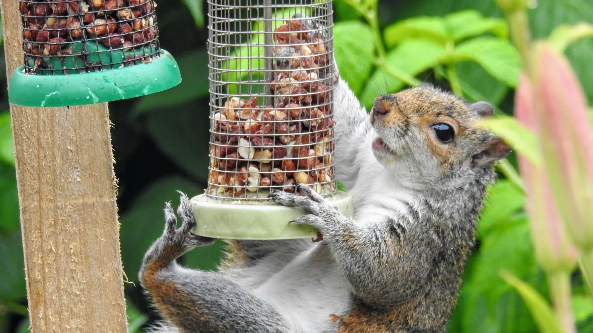

Why You Should Install a Chain-Link Fence in Your Yard
Discover the benefits of chain-link fencing for residential yards — affordability, durability, and low maintenance.
Read MoreGarden fencing, window screens, decorative wire products, and pet enclosures — combining security, aesthetics, and durability for residential properties and communities.
Residential properties demand wire and mesh products that balance practical function with visual appeal. From garden fencing that defines property boundaries to window screens that keep insects out while letting fresh air in, KESTREL METAL supplies a comprehensive range of decorative and functional wire products for homeowners, contractors, and residential developers.
Our PVC-coated and colored mesh options complement any architectural style, while galvanized steel construction ensures years of reliable service in outdoor residential environments. Whether you need decorative mesh for architectural features, secure pet enclosures, or wildlife exclusion fencing for rural properties, our products are manufactured under ISO 9001 quality controls and trusted by distributors serving 30+ countries worldwide.

Decorative and functional wire mesh products engineered for homes, gardens, and residential communities.
Decorative and functional garden fencing for property boundaries, landscaping features, and outdoor living spaces. Available in welded wire panels, woven mesh, and PVC-coated options in a range of colors to complement any home design while providing reliable boundary definition and pet containment.
View Product
Fine mesh insect screens and security mesh for windows and doors. Provides effective insect exclusion while maintaining airflow and visibility. Options include fiberglass mesh for standard insect screening and reinforced stainless steel mesh for added security against forced entry.
View Product
Hexagonal wire netting for pet enclosures, rabbit cages, chicken runs, and garden protection. Lightweight, easy to install, and available in galvanized or PVC-coated finishes for outdoor durability. Ideal for hobby farmers, pet owners, and home gardeners protecting plants from small animals.
View Product
Tree guards and wildlife exclusion fencing for property protection in rural and suburban settings. Prevents deer, rabbits, and other wildlife from damaging landscaping, gardens, and young trees. Available in various heights and mesh sizes for different species and applications.
View ProductWe understand the unique challenges homeowners and residential developers face — and we engineer solutions to address each one.
Residential fencing and mesh must balance security and function with visual appeal to complement home architecture and landscaping design.
PVC-coated colored fencing and decorative mesh designs available in multiple colors and patterns to match any home's architectural style and landscape aesthetic.
Keeping mosquitoes, flies, and other insects out of the home while maintaining natural ventilation is essential for residential comfort and health.
Fine mesh window and door screens engineered with optimal aperture sizes to exclude insects while maximizing airflow and preserving visibility.
Residential wire products must protect pets and children from injury, with smooth surfaces and secure enclosure designs that prevent escapes.
Smooth-surface wire and secure enclosure designs with PVC coating and rounded edges to prevent injury to pets and children while ensuring reliable containment.
Outdoor residential products face years of sun, rain, humidity, and temperature cycling that can degrade untreated steel and cheap coatings.
PVC coating and galvanized steel construction deliver long service life in outdoor residential environments, with UV-stable colors that resist fading and cracking.

PVC color options in green, black, white, and brown to complement any home's architectural style and landscaping.
Fine mesh screens engineered with optimal aperture sizes for effective insect exclusion without compromising airflow.
Smooth safety wire with rounded edges and PVC coating to protect pets, children, and family from injury.
Galvanized durability with hot-dip zinc coating for long service life in outdoor residential environments.
Custom sizes manufactured to your exact specifications for any residential project, from single homes to developer communities.
Homeowner-friendly designs that are easy to install, maintain, and integrate with standard residential gates and posts.
Our products meet the international standards and certifications relevant to this industry.
Quality management system ensuring consistent residential fencing and mesh product quality.
Standard specification for temporary and residential chain-link fence framework.
Products meeting Consumer Product Safety Commission guidelines for residential safety.
Standard specification for hot-dip galvanized coatings on residential fence products.

Discover the benefits of chain-link fencing for residential yards — affordability, durability, and low maintenance.
Read More
Practical guide to using wire mesh screens to keep squirrels and pests out of your home, attic, and garden.
Read More
How architectural wire mesh combines security function with contemporary design for residential facades and features.
Read MoreContact our engineering team for project-specific product recommendations, custom specifications, and competitive pricing.